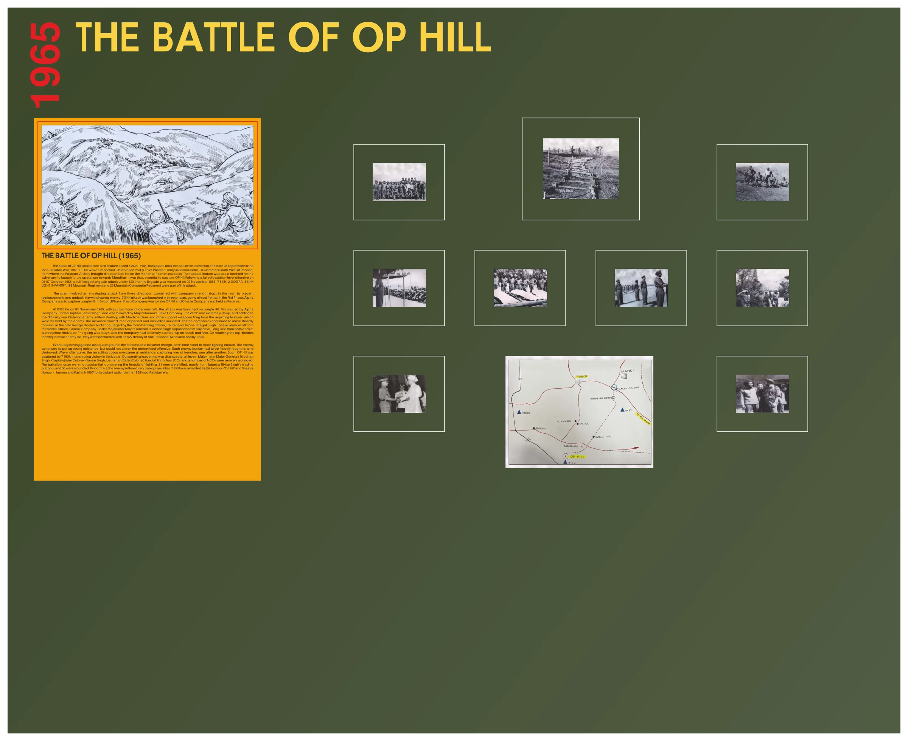
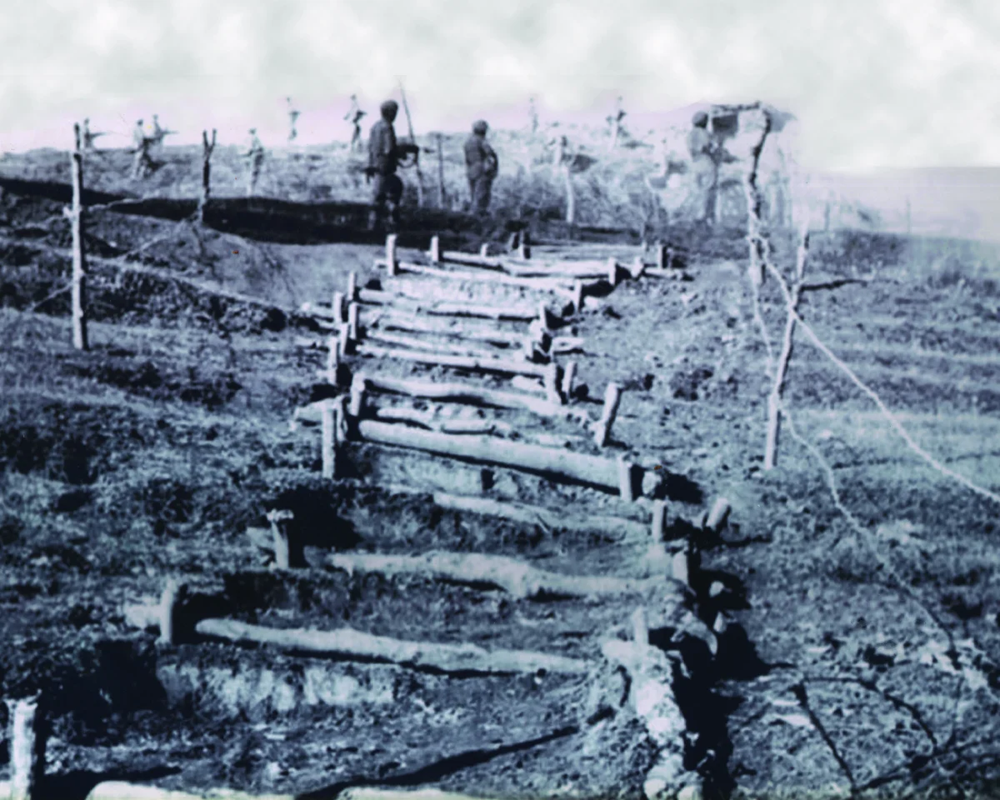
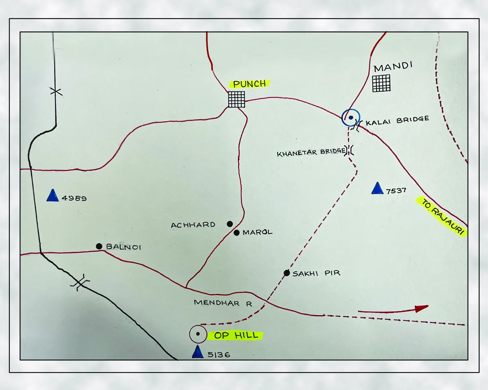
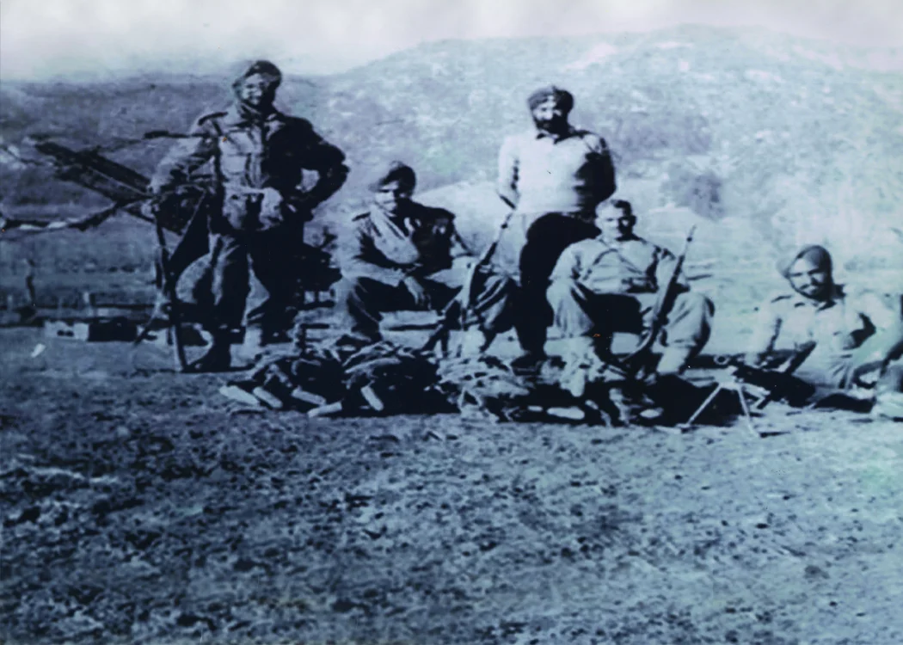
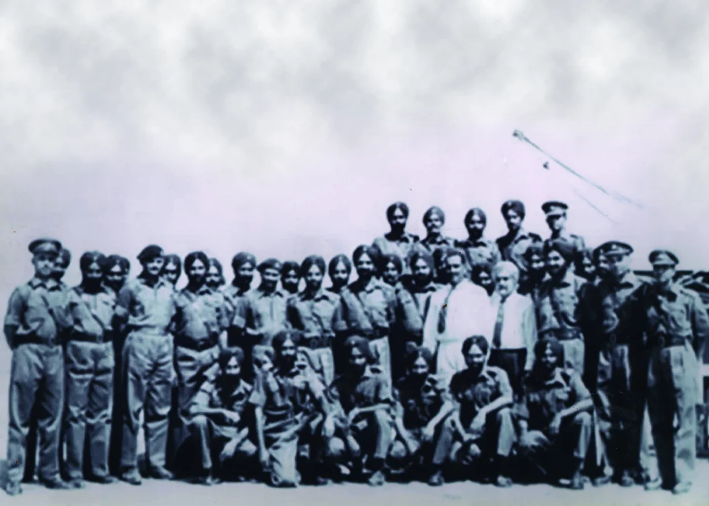
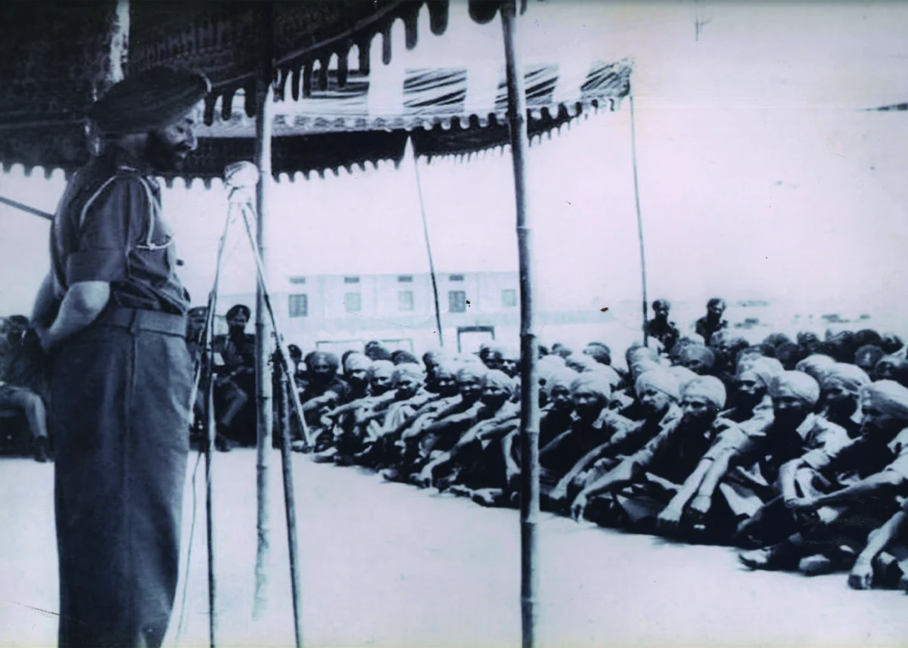
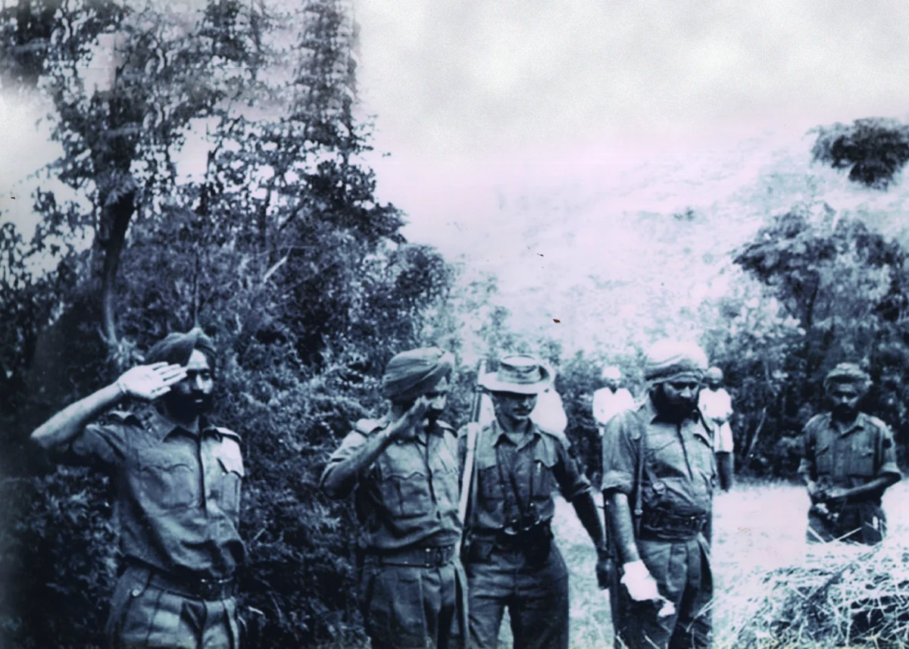
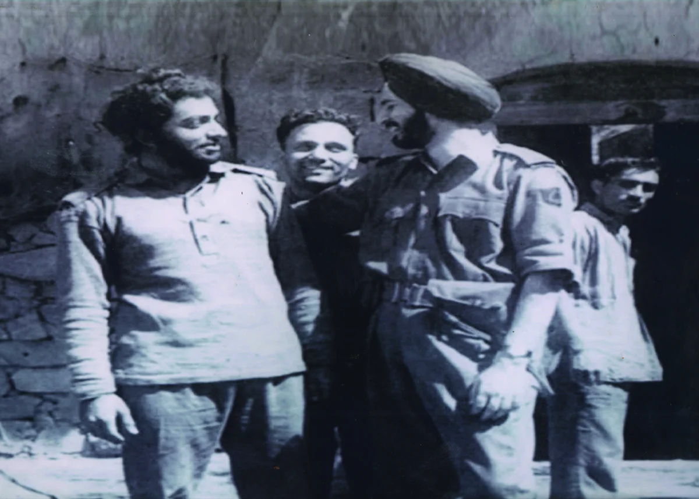
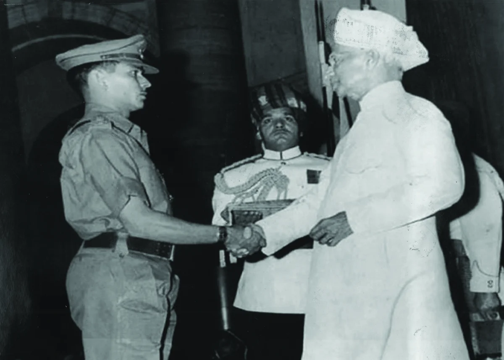
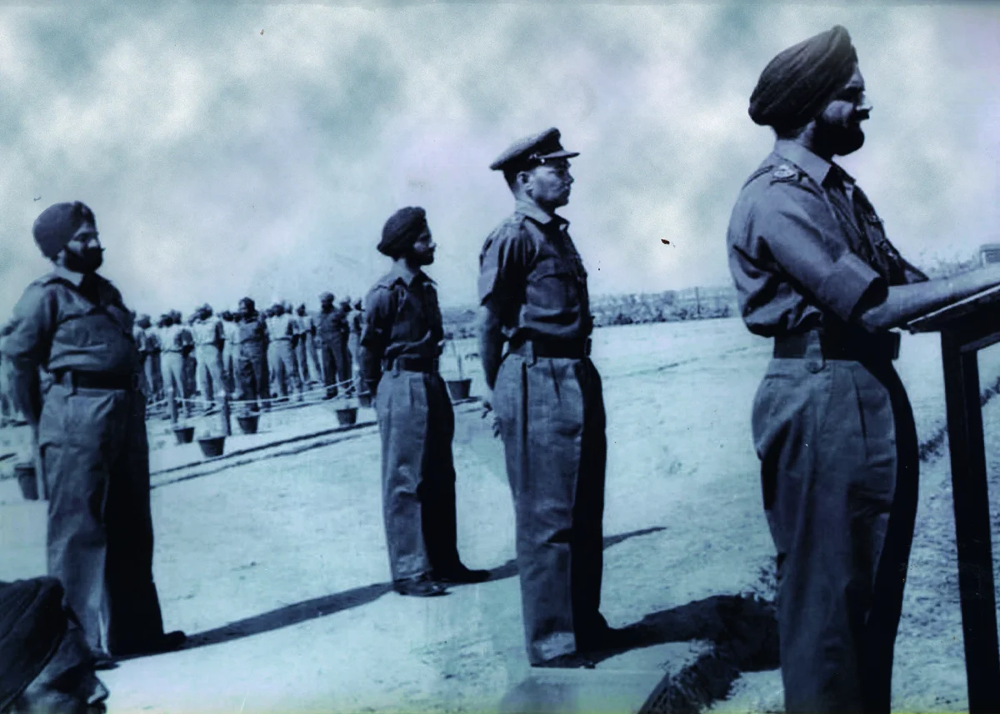
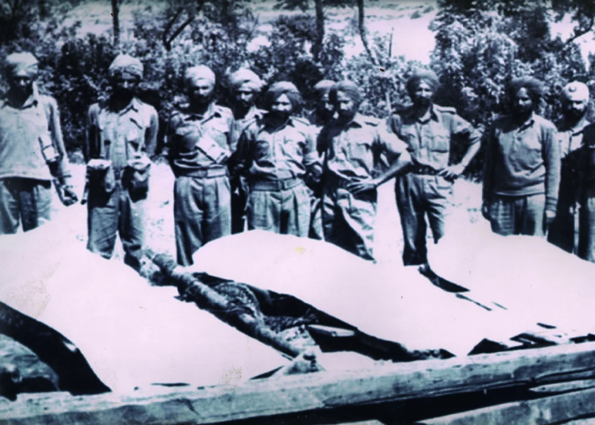
ਓਪੀ ਹਿੱਲ ਦੀ ਲੜਾਈ ('ਚੂਹ-ਏ-ਨਾਰ' ਨਾਂ ਦੀ ਪਹਾੜੀ ਵਿਸ਼ੇਸ਼ਤਾ 'ਤੇ ਸਥਿਤ) ਜੰਗਬੰਦੀ ਤੋਂ ਬਾਅਦ ਹੋਈ ਸੀ। ਭਾਰਤ-ਪਾਕਿਸਤਾਨ ਯੁੱਧ, 1965 ਵਿੱਚ 23 ਸਤੰਬਰ ਨੂੰ ਲਾਗੂ ਹੋਇਆ। ਓਪੀ ਹਿੱਲ ਇੱਕ ਮਹੱਤਵਪੂਰਨ ਨਿਰੀਖਣ ਸੀ ਪੁੰਛ ਤੋਂ 20 ਕਿਲੋਮੀਟਰ ਦੱਖਣ-ਪੱਛਮ ਵਿਚ ਬਲਨੋਈ ਸੈਕਟਰ ਵਿਚ ਪਾਕਿਸਤਾਨੀ ਫੌਜ ਦੀ ਪੋਸਟ (ਓਪੀ), ਜਿੱਥੋਂ ਪਾਕਿਸਤਾਨੀ ਤੋਪਖਾਨੇ ਨੇ ਮੇਂਢਰ-ਪੁੰਛ ਸੜਕ ਦੇ ਧੁਰੇ 'ਤੇ ਸਿੱਧੀ ਤੋਪਖਾਨੇ ਨਾਲ ਗੋਲੀਬਾਰੀ ਕੀਤੀ। ਰਣਨੀਤਕ ਵਿਸ਼ੇਸ਼ਤਾ ਵੀ ਸੀ ਮੇਂਧਰ ਵੱਲ ਭਵਿੱਖੀ ਕਾਰਵਾਈਆਂ ਸ਼ੁਰੂ ਕਰਨ ਲਈ ਵਿਰੋਧੀ ਲਈ ਪੈਰ ਰੱਖਣ - ਇਸ ਲਈ ਇਹ ਜ਼ਰੂਰੀ ਸੀ ਓਪੀ ਹਿੱਲ 'ਤੇ ਕਬਜ਼ਾ ਕਰੋ। 06-07 ਅਕਤੂਬਰ 1965 ਨੂੰ ਇੱਕ ਅਸਫਲ ਬਟਾਲੀਅਨ ਪੱਧਰੀ ਹਮਲੇ ਤੋਂ ਬਾਅਦ, ਇੱਕ ਪੂਰੀ ਤਰ੍ਹਾਂ 02 ਨਵੰਬਰ 1965 ਨੂੰ 120 ਇਨਫੈਂਟਰੀ ਬ੍ਰਿਗੇਡ ਦੇ ਅਧੀਨ ਬ੍ਰਿਗੇਡ ਹਮਲਾ ਕੀਤਾ ਗਿਆ ਸੀ - 7 ਸਿੱਖ, 2 ਡੋਗਰਾ, 5 ਸਿੱਖ ਲਾਈਟ ਇਨਫੈਂਟਰੀ, 169 ਮਾਊਂਟੇਨ ਰੈਜੀਮੈਂਟ ਅਤੇ 23 ਮਾਊਂਟੇਨ ਕੰਪੋਜ਼ਿਟ ਰੈਜੀਮੈਂਟ ਇਸ ਹਮਲੇ ਦਾ ਹਿੱਸਾ ਸਨ।
ਇਸ ਯੋਜਨਾ ਵਿੱਚ ਤਿੰਨ ਦਿਸ਼ਾਵਾਂ ਤੋਂ ਇੱਕ ਲਿਫਾਫੇ ਵਾਲਾ ਹਮਲਾ ਸ਼ਾਮਲ ਸੀ, ਜਿਸ ਵਿੱਚ ਕੰਪਨੀ ਦੀ ਤਾਕਤ ਰੁਕ ਗਈ ਸੀ ਪਿੱਛੇ, ਮਜ਼ਬੂਤੀ ਨੂੰ ਰੋਕਣ ਅਤੇ ਪਿੱਛੇ ਹਟਣ ਵਾਲੇ ਦੁਸ਼ਮਣ 'ਤੇ ਹਮਲਾ ਕਰਨ ਲਈ। 7 ਸਿੱਖ ਹਮਲੇ ਤਿੰਨ ਵਿੱਚ ਕੀਤੇ ਗਏ ਪੜਾਅ, ਲਗਭਗ ਅੱਗੇ ਜਾ ਰਿਹਾ ਹੈ. ਪਹਿਲੇ ਪੜਾਅ ਵਿੱਚ, ਅਲਫ਼ਾ ਕੰਪਨੀ ਨੇ ਜੰਗਲ ਹਿੱਲ ਉੱਤੇ ਕਬਜ਼ਾ ਕਰਨਾ ਸੀ। ਦੂਜੇ ਵਿੱਚ ਫੇਜ਼, ਬ੍ਰਾਵੋ ਕੰਪਨੀ ਨੇ ਓਪੀ ਹਿੱਲ ਨੂੰ ਲੈਣਾ ਸੀ ਅਤੇ ਚਾਰਲੀ ਕੰਪਨੀ ਨੂੰ ਰਿਜ਼ਰਵ ਵਜੋਂ ਰੱਖਿਆ ਗਿਆ ਸੀ।
03 ਨਵੰਬਰ 1965 ਨੂੰ 03.10 ਵਜੇ, ਸਿਰਫ਼ ਦੋ ਘੰਟੇ ਹਨੇਰਾ ਬਾਕੀ ਸੀ, ਜੰਗਲ ਉੱਤੇ ਹਮਲਾ ਕੀਤਾ ਗਿਆ। ਪਹਾੜੀ। ਇਸ ਦੀ ਅਗਵਾਈ ਕੈਪਟਨ ਸੰਸਾਰ ਸਿੰਘ ਦੀ ਅਗਵਾਈ ਹੇਠ ਅਲਫ਼ਾ ਕੰਪਨੀ ਕਰ ਰਹੀ ਸੀ ਅਤੇ ਇਸ ਤੋਂ ਬਾਅਦ ਮੇਜਰ ਸ਼ਰਮਾ ਸਨ ਬ੍ਰਾਵੋ ਕੰਪਨੀ. ਚੜ੍ਹਾਈ ਬਹੁਤ ਉੱਚੀ ਸੀ, ਅਤੇ ਮੁਸ਼ਕਲ ਵਿੱਚ ਵਾਧਾ ਦੁਸ਼ਮਣ ਨੂੰ ਫਟਣ ਵਾਲਾ ਸੀ ਤੋਪਖਾਨੇ ਦੀ ਗੋਲਾਬਾਰੀ, ਮਸ਼ੀਨ ਗਨ ਅਤੇ ਨਾਲ ਲੱਗਦੀਆਂ ਵਿਸ਼ੇਸ਼ਤਾਵਾਂ ਤੋਂ ਫਾਇਰਿੰਗ ਕਰਨ ਵਾਲੇ ਹੋਰ ਸਹਾਇਕ ਹਥਿਆਰਾਂ ਨਾਲ, ਜੋ ਅਜੇ ਵੀ ਦੁਸ਼ਮਣ ਦੇ ਕਬਜ਼ੇ ਵਿੱਚ ਸਨ। ਅੱਗੇ ਵਧਣ ਦੀ ਰਫ਼ਤਾਰ ਮੱਠੀ ਹੋ ਗਈ, ਆਦਮੀ ਖਿੰਡ ਗਏ ਅਤੇ ਜਾਨੀ ਨੁਕਸਾਨ ਵਧ ਗਿਆ। ਫਿਰ ਵੀ ਕੰਪਨੀਆਂ ਨੇ ਲਗਾਤਾਰ ਅੱਗੇ ਵਧਣਾ ਜਾਰੀ ਰੱਖਿਆ, ਹਰ ਸਮੇਂ ਦੁਆਰਾ ਉਤਸ਼ਾਹਿਤ ਅਤੇ ਉਤਸ਼ਾਹਿਤ ਕੀਤਾ ਜਾ ਰਿਹਾ ਹੈ ਕਮਾਂਡਿੰਗ ਅਫਸਰ ਲੈਫਟੀਨੈਂਟ ਕਰਨਲ ਭਗਤ ਸਿੰਘ। ਸਾਹਮਣੇ ਵਾਲੇ ਹਮਲੇ ਤੋਂ ਦਬਾਅ ਲੈਣ ਲਈ, ਚਾਰਲੀ ਕੰਪਨੀ, ਮੇਜਰ (ਬਾਅਦ ਵਿੱਚ ਮੇਜਰ ਜਨਰਲ) ਤ੍ਰਿਲੋਚਨ ਸਿੰਘ ਦੀ ਅਗਵਾਈ ਵਿੱਚ, ਆਪਣੇ ਉਦੇਸ਼, ਲੌਂਗ ਟ੍ਰੀ ਤੱਕ ਪਹੁੰਚ ਗਈ ਇੱਕ ਤੇਜ਼ ਚੱਟਾਨ ਦੇ ਚਿਹਰੇ ਦੇ ਦੋਵਾਂ ਸਿਰਿਆਂ ਤੋਂ. ਜਾਣਾ ਮੁਸ਼ਕਲ ਸੀ, ਅਤੇ ਕੰਪਨੀ ਨੂੰ ਸ਼ਾਬਦਿਕ ਤੌਰ 'ਤੇ ਚੜ੍ਹਨਾ ਪਿਆ ਹੱਥਾਂ ਅਤੇ ਪੈਰਾਂ 'ਤੇ. ਸਿਖਰ 'ਤੇ ਪਹੁੰਚਣ 'ਤੇ, ਦੁਸ਼ਮਣ ਦੀ ਅਤਿਅੰਤ ਗੋਲੀਬਾਰੀ ਤੋਂ ਇਲਾਵਾ, ਉਨ੍ਹਾਂ ਦਾ ਸਾਹਮਣਾ ਕੀਤਾ ਗਿਆ ਐਂਟੀ-ਪਰਸੋਨਲ ਮਾਈਨਜ਼ ਅਤੇ ਬੂਬੀ ਟ੍ਰੈਪਸ ਦੀ ਭਾਰੀ ਘਣਤਾ ਦੇ ਨਾਲ।
ਆਖ਼ਰਕਾਰ ਢੁਕਵੀਂ ਜ਼ਮੀਨ ਪ੍ਰਾਪਤ ਕਰ ਲੈਣ ਤੋਂ ਬਾਅਦ, ਸਿੱਖਾਂ ਨੇ ਬੇਯੋਨੈਟ ਚਾਰਜ ਕੀਤਾ, ਅਤੇ ਹੱਥੋਂ-ਹੱਥੀਂ ਭਿਆਨਕ ਹਮਲਾ ਕੀਤਾ। ਲੜਾਈ ਹੋਈ। ਦੁਸ਼ਮਣ ਜ਼ੋਰਦਾਰ ਵਿਰੋਧ ਕਰਦਾ ਰਿਹਾ, ਪਰ ਦ੍ਰਿੜ ਇਰਾਦੇ ਨੂੰ ਰੋਕ ਨਾ ਸਕਿਆ ਅਪਮਾਨਜਨਕ. ਦੁਸ਼ਮਣ ਦੇ ਹਰੇਕ ਬੰਕਰ ਨੂੰ ਸਖ਼ਤੀ ਨਾਲ ਲੜਨਾ ਅਤੇ ਤਬਾਹ ਕਰਨਾ ਪਿਆ। ਲਹਿਰ ਦੇ ਬਾਅਦ ਵੇਵ, the ਹਮਲਾ ਕਰਨ ਵਾਲੀਆਂ ਫੌਜਾਂ ਨੇ ਸਾਰੇ ਟਾਕਰੇ ਉੱਤੇ ਕਾਬੂ ਪਾ ਲਿਆ, ਇੱਕ ਤੋਂ ਬਾਅਦ ਇੱਕ ਖਾਈ ਦੀਆਂ ਲਾਈਨਾਂ ਉੱਤੇ ਕਬਜ਼ਾ ਕਰ ਲਿਆ। ਜਲਦੀ ਹੀ, ਓਪੀ ਹਿੱਲ 7 ਸਿੱਖਾਂ ਨੇ ਕਬਜ਼ਾ ਕਰ ਲਿਆ, ਇਸ ਤਰ੍ਹਾਂ ਇਸ ਲੜਾਈ ਵਿਚ ਜਿੱਤ ਯਕੀਨੀ ਬਣਾਈ ਗਈ। 'ਤੇ ਸ਼ਾਨਦਾਰ ਅਗਵਾਈ ਦਾ ਪ੍ਰਦਰਸ਼ਨ ਕੀਤਾ ਗਿਆ ਸਾਰੇ ਪੱਧਰ. ਮੇਜਰ (ਬਾਅਦ ਵਿੱਚ ਮੇਜਰ ਜਨਰਲ) ਤ੍ਰਿਲੋਚਨ ਸਿੰਘ, ਕੈਪਟਨ (ਬਾਅਦ ਵਿੱਚ ਕਰਨਲ) ਸੰਸਾਰ ਸਿੰਘ, ਲੈਫਟੀਨੈਂਟ (ਬਾਅਦ ਵਿੱਚ ਕਰਨਲ) ਹਰਦਿਆਲ ਸਿੰਘ, ਚਾਰ ਜੇਸੀਓ ਅਤੇ ਕਈ ਐਨਸੀਓਜ਼ ਬੁਰੀ ਤਰ੍ਹਾਂ ਜ਼ਖ਼ਮੀ ਹੋ ਗਏ।
ਲੜਾਈ ਦੀ ਭਿਆਨਕਤਾ ਨੂੰ ਧਿਆਨ ਵਿਚ ਰੱਖਦੇ ਹੋਏ, ਬਟਾਲੀਅਨ ਦਾ ਨੁਕਸਾਨ ਕਾਫ਼ੀ ਨਹੀਂ ਸੀ। 21 ਬੰਦੇ ਮਾਰੇ ਗਏ। ਜ਼ਿਆਦਾਤਰ ਸੂਬੇਦਾਰ ਬਿੱਕਰ ਸਿੰਘ ਦੀ ਮੋਹਰੀ ਪਲਟਨ ਵਿੱਚੋਂ ਸਨ ਅਤੇ 50 ਜਖ਼ਮੀ ਹੋਏ ਸਨ। ਇਸ ਦੇ ਉਲਟ, ਦੁਸ਼ਮਣ ਨੂੰ ਨੁਕਸਾਨ ਹੋਇਆ ਬਹੁਤ ਭਾਰੀ ਜਾਨੀ ਨੁਕਸਾਨ 7 ਸਿੱਖ ਨੂੰ ਬੈਟਲ ਆਨਰ - 'ਓਪੀ ਹਿੱਲ' ਅਤੇ ਥੀਏਟਰ ਆਨਰ - 'ਜੰਮੂ ਅਤੇ ਕਸ਼ਮੀਰ 1965' 1965 ਦੀ ਭਾਰਤ-ਪਾਕਿਸਤਾਨ ਜੰਗ ਵਿੱਚ ਆਪਣੀਆਂ ਬਹਾਦਰੀ ਵਾਲੀਆਂ ਕਾਰਵਾਈਆਂ ਲਈ।
ਆਪਣੇ ਫ਼ੋਨ 'ਤੇ ਅੰਗਰੇਜ਼ੀ, ਹਿੰਦੀ ਜਾਂ ਪੰਜਾਬੀ ਵਿੱਚ ਦੇਖਣ ਲਈ ਇਸ QR ਕੋਡ ਨੂੰ ਸਕੈਨ ਕਰੋ।